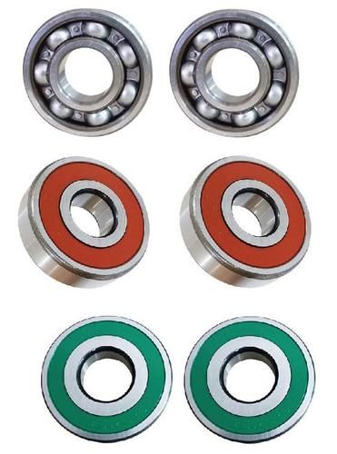
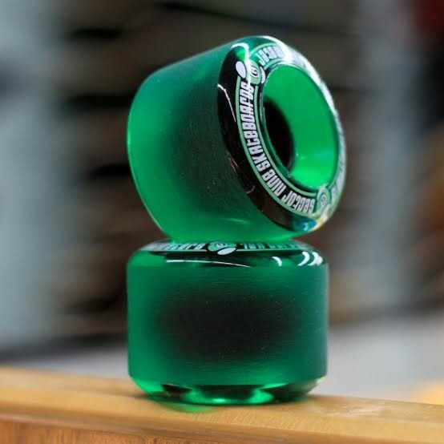
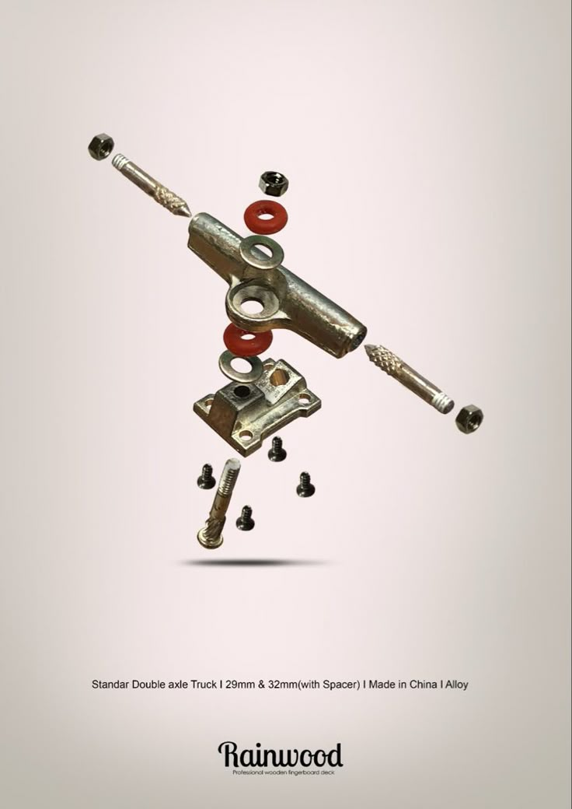
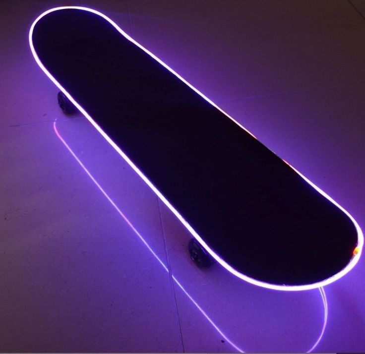
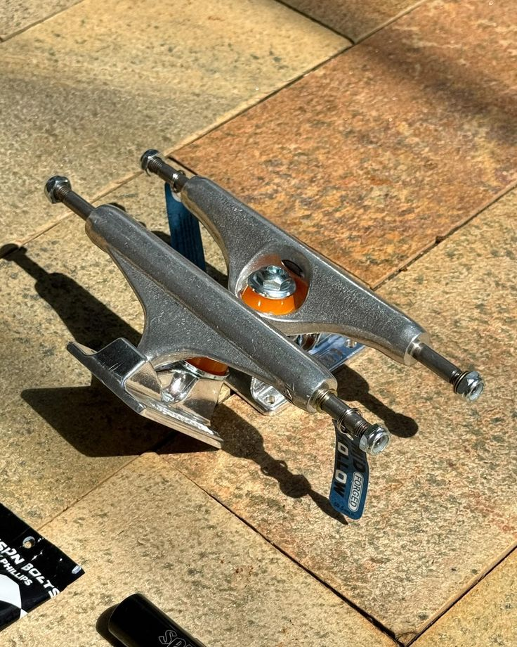
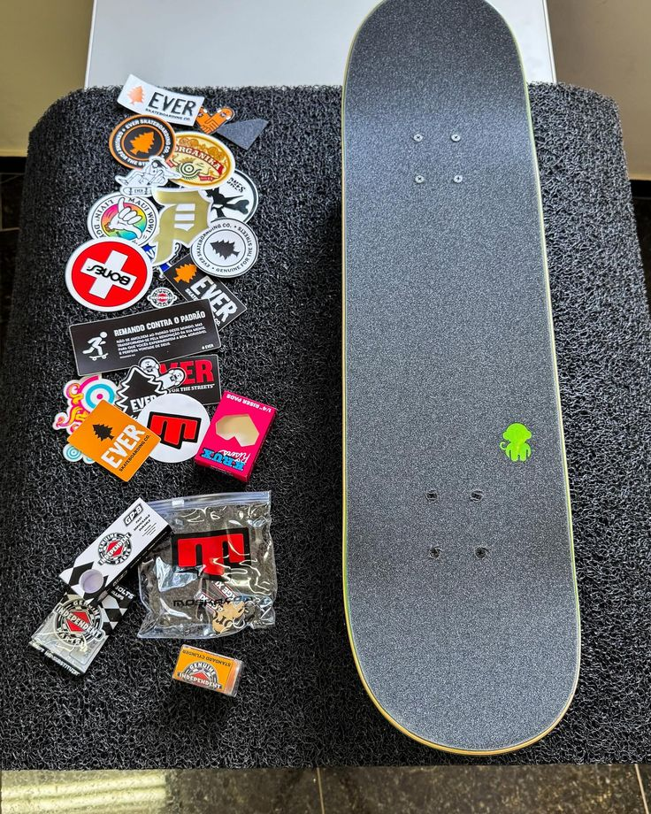

Rolamentos: Os rolamentos em skates são essenciais para a rotação das rodas, permitindo movimentos suaves e rápidos.
Rodas: São as peças circulares que se conectam aos trucks e permitem que o skate se mova. As rodas podem ser feitas de diferentes materiais e ter diferentes tamanhos e durezas.
Parafusos e porcas: São as peças que seguram o deck, trucks e rodas juntos.
Shap: É a plataforma de madeira ou outro material que você fica em pé enquanto anda de skate. O deck é onde você coloca os pés e é a base do skate.
Trucks: São as peças metálicas que se conectam ao deck e permitem que você vire o skate. Os trucks têm rodas e são responsáveis pela direção e estabilidade do skate
Lixas: São as peças que se colocam na parte superior do deck para fornecer tração e evitar que os pés escorreguem.
